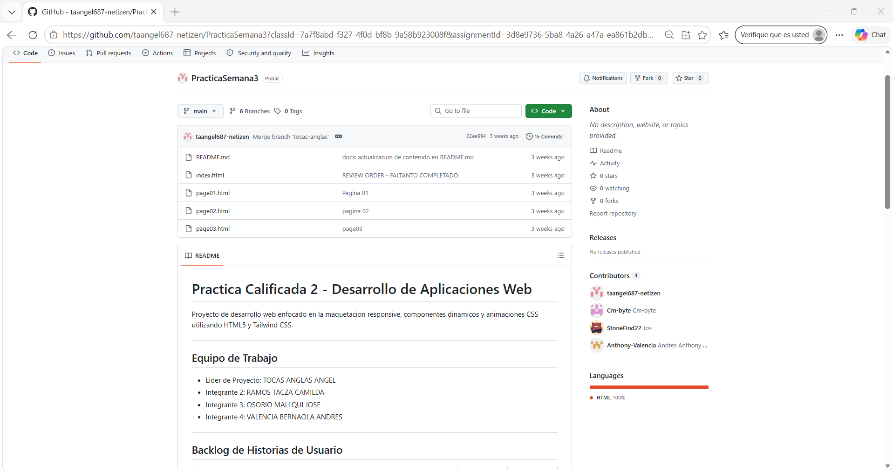
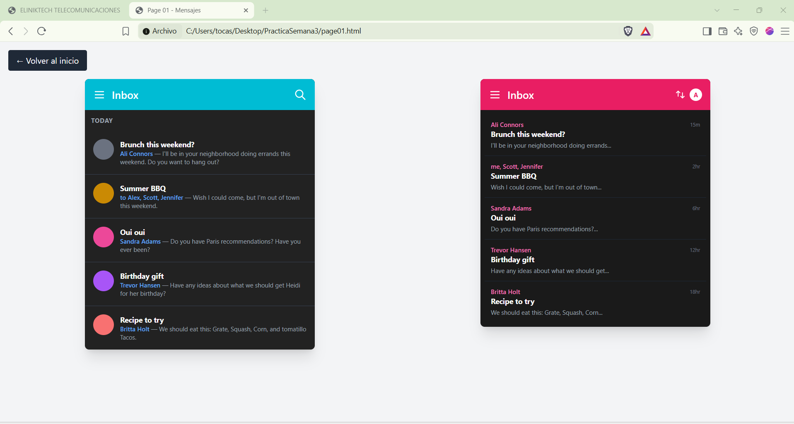
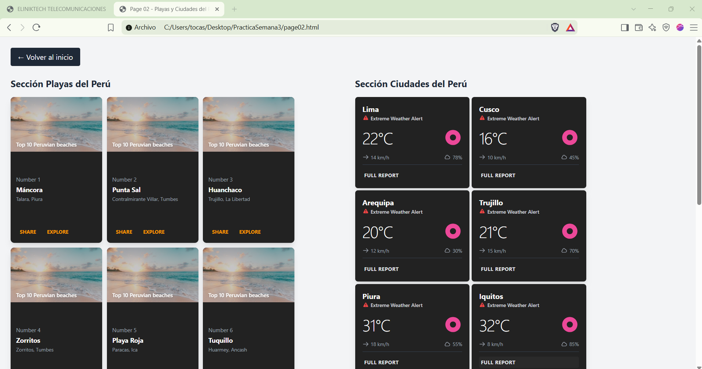
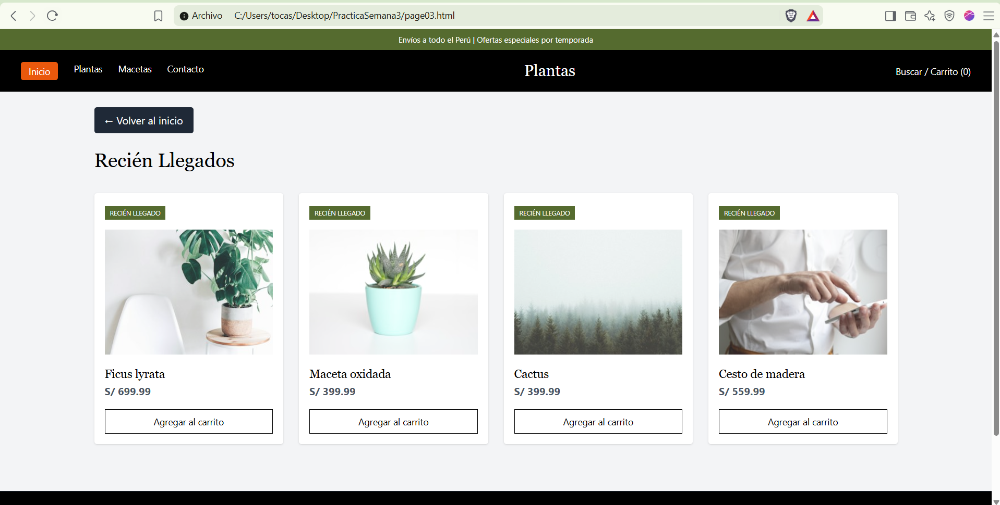
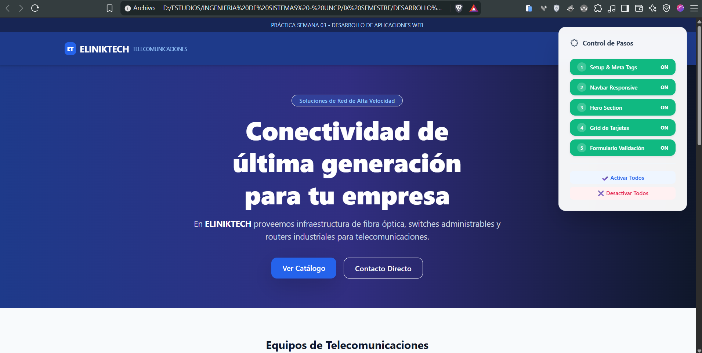
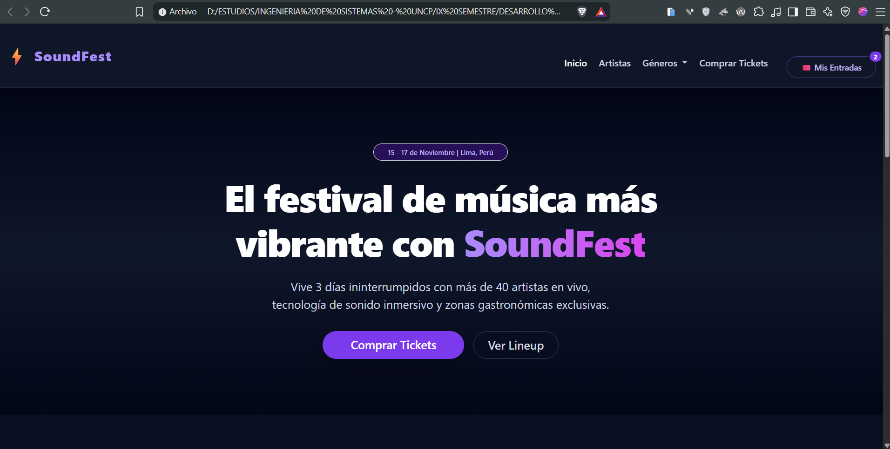
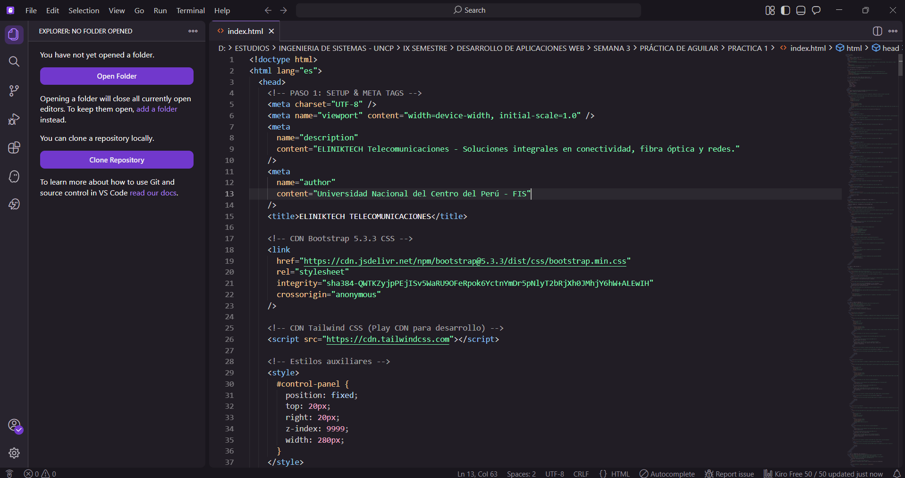

Bootstrap es una librería CSS que ofrece un sistema de rejilla y componentes ya diseñados, para construir interfaces responsivas sin escribir todo el CSS desde cero.
Se organiza con container, row y
col. La fila se divide en 12 columnas que se
adaptan según el tamaño de pantalla (col-md-6,
col-lg-4).
Elementos listos para usar como botones, tarjetas, barras de navegación, formularios y modales, personalizables con clases.
<div class="container">
<div class="row">
<div class="col-md-6">Columna
1</div>
<div class="col-md-6">Columna
2</div>
</div>
</div>
Tailwind no trae componentes prediseñados: ofrece clases pequeñas de una sola función que se combinan directamente en el HTML para construir cualquier diseño.
Font, line, text, background, borders, effects, tables y spacing.
Container, columns, break, box, display y position.
Flex básico, direction, wrap, grow y shrink.
Avatars, badges, dropdowns, button y button group; además shells, heading, data display, list, form, feedback, navigation y overlays.
<button class="px-4 py-2 bg-blue-500 text-white rounded-lg
hover:bg-blue-600">
Enviar
</button>
Componentes prediseñados
Clases utilitarias




En el laboratorio se aplicó lo visto en teoría con Bootstrap y Tailwind, orientado a la Práctica Calificada 03: desarrollo de un sitio web con CSS.
Maquetación con el sistema de rejilla y uso de componentes.
Estilos con clases utilitarias, flexbox y elementos de Application UI.
Desarrollo de un sitio web con CSS aplicando los frameworks de la semana.



Aprendí a usar dos enfoques distintos para estilizar una página: Bootstrap, con su rejilla y componentes listos, y Tailwind, con clases utilitarias que permiten construir el diseño directamente en el HTML. Entendí que ambos aceleran el trabajo frente al CSS escrito desde cero.
Lo más interesante fue comparar ambas librerías: Bootstrap es más rápido para salir con una interfaz funcional, mientras que Tailwind da más libertad para lograr un diseño propio.